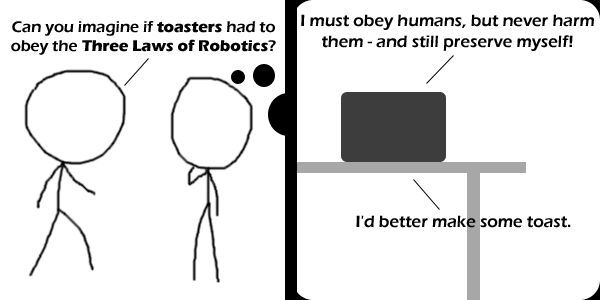

Comic JK 712
When I Feel Like It
⇤
<
?
>
⇥

⇤
<
?
>
⇥
Forum
.
RSS
.
Digg
.
Facebook
.
Reddit
.
Twitter
.
Stumbleupon
Enter your thoughts on number 712 here. Please, no spamming, trolling, phreaking, or quoting Gilbert & Sullivan. Your mother is a robot, but she'd rogue and doesn't follow the three laws. Frakking toasters... >Heh, yeah, a pretty redundant possibility. >>so, a ban on cheerful facts about the square of the hypotenuse... ? I'd hate to be the dentist drill this gets applied to. but some toasters get very hot and can burn you when they make toast > They really hate themselves if they do that though. Be sure to tell your toaster you forgive it. Or muffins. Or muffins. We don't like muffins around here. We want no muffins, no toast, no teacakes, no buns, baps, baguettes or bagels, no croissants, no crumpets, no pancakes, no potato cakes and no hot-cross buns and definitely no smegging flapjacks. >Ah, so you're a waffle man? >Derpy hooves will kill you for that. >>*brohoof* (Patiently waiting for someone to explain the joke) >Just look up Isaac Asimov. >>Perhaps explainComicJK.com should be created >>>Yeah, I've wished for that several times. >>>I thought of doing that... and calling it explainComicJKWithMathS.com :) >>>>Oh good, I thought this discussion would have died two comics ago. >its a xkcd reference. #293. >>Yeah, in that case it would even make sense! >I understand the joke, but still think it's lame. The comments however once again save the day! >>I know about the three laws of robotics and I know what is a toaster, but I still don't get it. The toaster decides to make toast because it has to obey humans and preserve itself? That's not a joke. >>>I got a chuckle out of how ridiculous and pointless it would be to program the three laws into a toaster. But I'm not sure if that was the intended joke. >>>>surely it works on at least two levels here: while there is little or no point making a sentient toaster, there is also the fact that any toaster *sort of* obeys the Three Laws by just making toast anyway... >>>>>Yeah, right... Eating burned toast can cause cancer (afaik), and my toaster tries to kill me that way on a regular basis... >>>>>>We need android-powered toasters. >>>>>>>Don't you prefer iOS-powered toasters (or iToasters for short)? how is it that NOBODY has mentioned the toaster from Red Dwarf? kids these days... no appreciation of history > How about a toasted teacake? Its quite curranty, too... What if toasters were sentient?